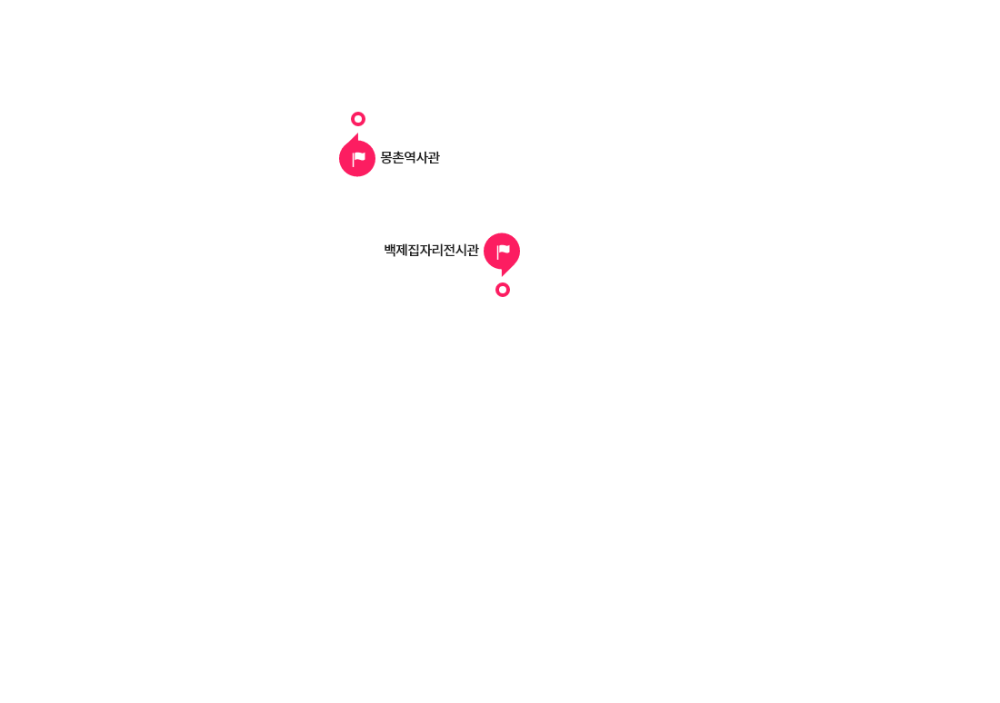

몽촌역사관
몽촌역사관은 올림픽공원 북2문에 위치하고 있습니다. 한성백제시기의 유물과 유적을 한눈에 볼 수 있을 뿐만 아니라, 2천년 고도의 역사적 중심지인 서울 한강유역을 중심으로 한 고대 역사와 문화를 다루고 있는 박물관입니다. 1983년부터 1989년까지 6차례의 발굴을 통해 움집터와 저장구덩이, 세발토기 등의 한성백제시기의 흔적을 확인하였습니다. 또한 2013년부터 체계적인 발굴 작업을 재개하여 현재도 진행 중입니다.
몽촌역사관에 들어서면 한강 유역의 선사와 고대시기 대표적인 유적·유물을 한 눈에 볼 수 있습니다. 전시실 중심부에는 몽촌토성 모형이 자리 잡고 있으며, 몽촌토성의 기능과 역할 및 당시 생활상도 확인할 수 있습니다.
몽촌역사관과 멀지 않은 곳에 백제집자리전시관도 있습니다. 몽촌토성에서 발굴된 한성백제시기의 육각형움집터와 저장구덩이를 그대로 보존하여 관람객으로 하여금 순간 과거로 돌아간 듯한 느낌을 갖게 합니다.
몽촌토성내에 위치한 몽촌역사관은 역사의 산 교육현장으로서의 의미가 매우 크다고 할 수 있습니다. ‘꿈마을에꼬뮤제’라는 비전으로 다양한 현장체험형, 참여형 교육프로그램을 운영함으로써 이곳을 찾는 어린이들이 도심 속에서 유적지를 탐방하고 눈으로 보고, 몸으로 배울 수 있는 체험형 박물관입니다.
관람안내
- 관람시간 : 평일 09:00~18:00 / 토, 일, 공휴일 09:00~18:00 (매주 월요일, 1월 1일 휴관)
- 입 장 료 : 무료
- 관람안내 : 몽촌역사관 - 02) 2152-5900, 백제집자리전시관 - 02)2152-5891
교통안내
- 지하철 이용 시
- 5호선 : 올림픽공원역 3번 출구 하차. 동2문 안으로 들어와서 도보로 15분
- 8호선 : 몽촌토성역 1번 출구 하차. 세계평화의문 안으로 들어와서 도보로 20분
- 버스 이용 시
- 2호선 잠실역 7번 출구 ( 342, 4318 : 올림픽회관 정류장에서 하차. 도보 15분 )
- 2호선 잠실역 1번 출구 ( 341, 3411 : 올림픽회관 정류장에서 하차. 도보 15분 )
- 5호선 올림픽공원역 2번 출구 ( 3220, 3319 : '윤선생 영어교실 앞' 정류장에서 하차. 북 2문 입구로 들어와서 도보로 5분 )
- 5, 8호선 천호역 9번 출구 ( 3321 : 현대토파즈아파트 정류장에서 하차. 북 1문 입구로 들어와서 도보로 5분 )
- 그 밖에 다른 버스·도착 정류장 ( 3412, 3413(올림픽공원역 동 2문) / 3412, 3413, 340(세계평화의문, 몽촌토성역 남4문) / 340(올림픽회관), 6006(올림픽회관))
